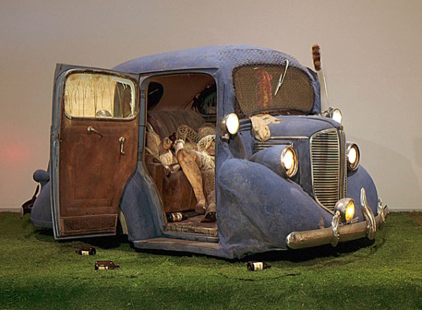
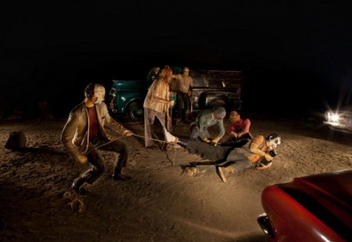

-
Why We Still Can’t Wait: Five Car Stud + America’s Racial History
by Hannah Daly February 25, 2012
The basic thing about Los Angeles…was that it lacked the dimensions of time…There were no seasons there, no days of the week, no night and day; beyond that, there was (or was supposed to be) no youth and age. But worst and most frightening, there was no past and future — only an eternal dizzying present.
Alison Lurie, The Nowhere City, 1966
On a Sunday afternoon, the outdoor area surrounding Los Angeles’ Fairfax High School is transformed. Each weekend, the parking lot, athletic field, and large courtyard turn into a sea of reclaimed vintage and the hip young bodies who collect it. As a visitor to the West Coast metropolis, I followed the lead of my native tour guide to the trading post, which, in part, raises funds to support the programming of the school’s sub-program, the Los Angeles Unified School District’s Fairfax Magnet Center for Visual Arts. As I absentmindedly thumbed through the wares of a particularly intriguing book stand, my fingers fell upon the worn cover of a slim paperback volume. It emulated an opulently-embossed heavily-molded antique leather binding, including metallic-hued fleur-de-lis and the suggestion of decorative metal clasps on the edge opposite its spine.
catalog for Kienholz's 1966 LACMA show
Aesthetically intrigued by its cheeky suggestion of a vintage volume, I flipped the brittle cover to discover: I was holding the catalog from Edward Kienholz’s first solo show at the Los Angeles County Museum of Art in 1966. It was an oddly apropos moment — just hours before I was standing within LACMA’s most recent Kienholz exhibition, a re-presentation of a restored version of his sculptural installation Five Car Stud (1969-1972). The catalog included an image of the controversial Back Seat Dodge ‘38 (1964), the sexually explicit work that led the LA County’s Board of Supervisors to threaten cutting the museum’s funding in total. Forty-six years later, LACMA hosts Kienholz’s equally if not more disturbing Five Car Stud. This is the first exhibition of Stud on American soil, and only the second time it has been seen by the public anywhere since the piece’s 1972 exhibition during Kienholz’s time in Berlin. Stud has been in storage at the Kawamura Memorial Museum of Art, in Sakura, Japan.
Five Car Stud is Kienholz’s signature installation-style assemblage on an ambitious scale: five actual cars, and several true-to-life replicas of trees, create an outer ring around a terrifying grouping of sculptural figures. Stud depicts a lynching in a sickeningly violent moment of physical conflict. Perhaps the eeriest part of entering into the installation is the markedly distinct, specifically dramatic quality to the very air itself: the disquieting lighting in the black box room is accompanied by the echoing of dated music drifting from one of the car radios, and everything rests upon a floor of dry dirt that, with each visitor’s tenuous footstep, emits little cloud-like bursts of dust. There’s a kind of horrifying stillness to the dimmed gallery, one that reaches right into the pit of your stomach and insists: something is very, very wrong here.
“The theme actually concerns time and the white-wash it permits one to make of evil,” wrote then senior curator of modern art Maurice Tuchman in his accompanying essay for the 1966 show. Reading through the catalog, the question of time becomes all the more pressing, as almost quaint blips of anachronisms further bolster the current exhibition’s emphasis on historical context. In his essay, Tuchman moves through the works that make up the ‘66 show, centering his narrative on the evolution of Keinholz’s increasingly specific manipulation of media. I was struck by Tuchman’s curatorial perspective: his selection of language to describe the works and their significance, and a way of situating both the artist and his body of work within a particular context. While much of his writing certainly holds up, monumental changes which the country has undergone in recent history creep into my reading of the essay, betraying the unavoidable signs of time passed.
Thinking through the question of timelessness — how a work so distinctly political and of its moment ages over time — feels particularly relevant to the racially charged Five Car Stud. So much of mainstream racial discourse struggles with transitioning from the rhetoric of civil rights to our altogether more complex concerns of today. In our distinctly post-Civil Rights Era moment, the Obama-era moment, finding a new, productive language to speak about insistent racial inequities is complicated, particularly under the dangerous blanket of supposed post-race. Rhetoric that draws from the moralism of the Civil Rights Movement (and from that which coalesced around opposition to the Viet Nam War, as well as from the fundamental questions of gender and sexuality raised during those years) carries a quality of cultural determinism. Adherence to a politics of respectability — that ultimately advocates achieving racial harmony through capitulation to capitalistic demands of the ideal American citizen — doesn’t hold up in a time when the resurgence of an eerily regressive agenda rooted in white supremacy has taken over the American political landscape.
A striking example lies in Republican presidential candidate Rick Santorum’s recent racial snafu, in which he resurrected Reagan-era racial myths of the welfare queen to justify his policy hope of giving Americans jobs rather than handouts. Santorum didn’t use the word “poor,” or “low-income,” or “oppressed,” or indulge in any of the many other signifiers customarily used to refer to the country’s economically disadvantaged. Instead, he chose an adjective whose identity has become much-contested since. Most people agree the former United States Senator said black. In the wake of his blunder, Santorum sloppily denied his use of the racial qualification, insisting instead that he had switched gears mid sentence and had merely said blah. “I don’t use, I don’t, first off, I don’t use the term black very often. I use the term African-American more than I use black,” Santorum continually insisted in a wayward act of politically-correct cleanup. Santorum’s slip-up reflects the mainstream’s greater cultural ineptitude when speaking about race. We, literally, have no words: infuriating and meaningless babble spills from our lips.
still from tape of Rodney King beating, 1991
Five Car Stud bears a haunting compositional resemblance to a much later moment of highly visible, achingly violent racial confrontation. The 1991 beatings of Rodney King, tied so essentially to the budding memeified media landscape that it is now a mainstay, represents a moment when an image served as both testament and intervention. Whatever sense we may have had of ourselves in the heyday of multiculturalism, with the documentation of that event any confidence in our racial progressiveness abruptly met undeniable evidence that racism very much still did, and does, exist. The amateur video capturing the beating depicts a distant view of the police encounter in the grainy black and white of early handheld camcorders. An outer wall of police cars surrounds the uniformed officers who surround King. Eventually, King is knocked to the ground by baton blows and kicks. Even as he lay on the pavement, increasingly swallowed up by a swarm of police, the beating continues.
When you walk into Five Car Stud, and through it, weaving in and around each element, the spatial quality of the viewing experience, its power, becomes increasingly overwhelming. Tuchman referred to this as the two-fold possibility of Kienholz’s style: “the work is valid both ‘open’ and ‘closed’ so that the viewer’s active involvement is required to experience the work.” In other words, we, as viewers, are implicated within the work. Our bodies, placed side by side with Kienholz’s often morbidly-abstracted figuration, create a dialogue that will not allow us silence. In a purportedly post-race moment, what has happened to a necessarily uncomfortable racial dialogue? Kienholz insisted then, and and his work still does, that we cannot keep quiet about racism — our silence is complicity.
I wonder what the artist, who died in 1994, would think of his chosen home base now: the local post-Broad art market, rolling waves of racial tension, and a shifting geographic stratification mapped onto the continually sprawling city. What would Kienholz say to the tokenism with which Obama is offered as example of our new racial harmony? How would his work digest a racial violence presumably less prevalent in moonlight fields, but perpetually insistent in political debates and policy campaigns?
As we walked through the still-expanding crowds at the Fairfax market, more and more young people, vaguely stylish in over-sized sunglasses, filling the walkways between tents, my Angelenos companions expressed increasing disbelief at the vast changes in the look and feel of their alma mater. In just the short time it takes to complete an undergraduate degree, Fairfax High School, home of the Fairfax Lions, had sprouted umbrellas over every picnic table, installed crisp informative signs directing visitors, and now sports a vibrant, rudimentary mascot-themed mural which brightens up several surfaces of the school’s facade. Things looked good, really good, they agreed, better than they ever had. A nation’s political and social culture, however, can’t be as satisfied with cosmetic improvements as a building can. Our racial moment looks and undeniably is, in many ways truly is, much improved in the time which has passed since Kienholz first created Five Car Stud. Revisiting the work pokes holes in those improvements however, allowing a heavy, saddening history to shine through on contemporary inequities. As we become absorbed in the other-world tableau of Five Car Stud, Kienholz seems to be calling from the past, asking: what part do you play, now?